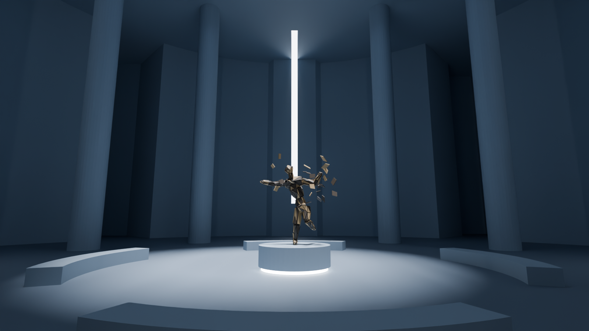
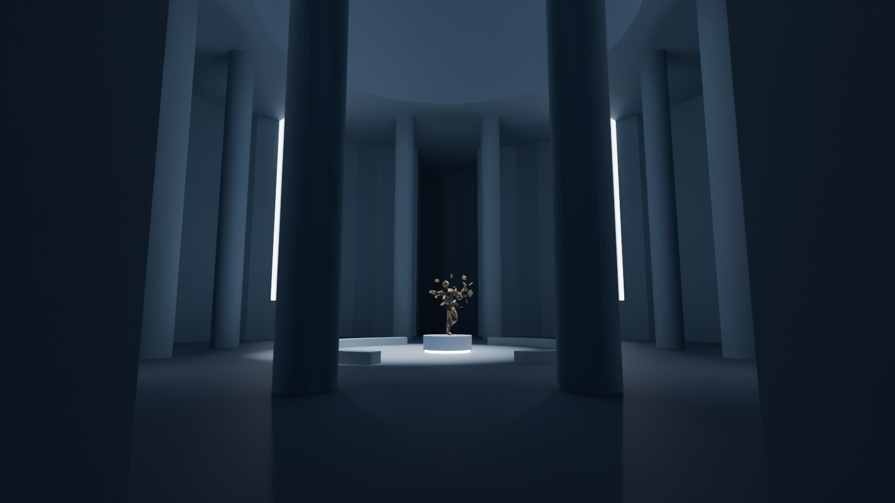
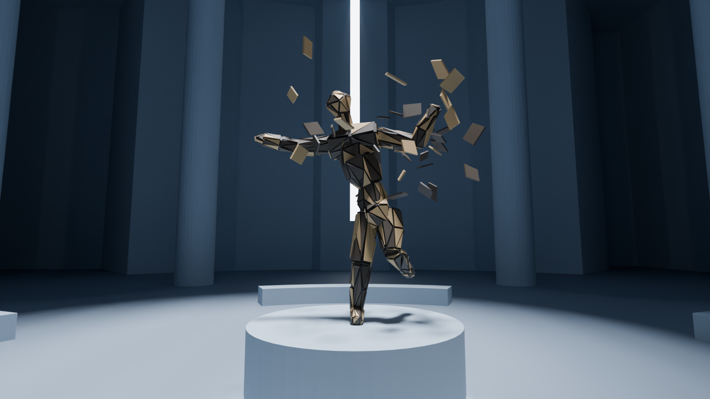
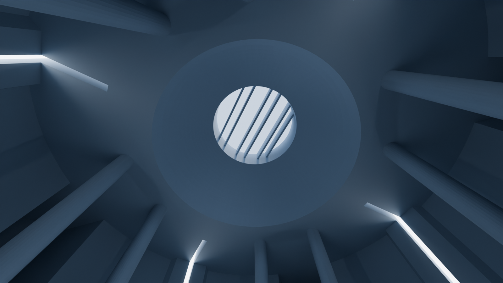
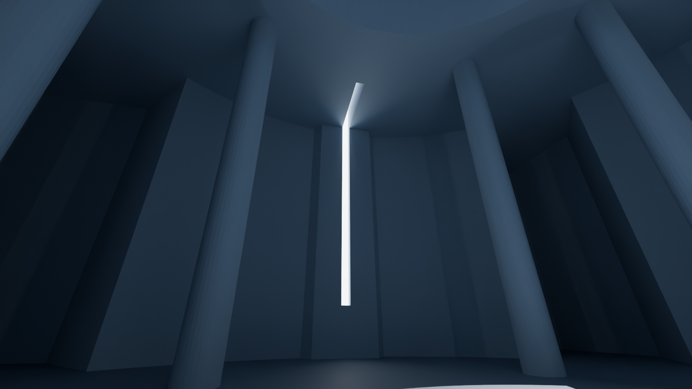
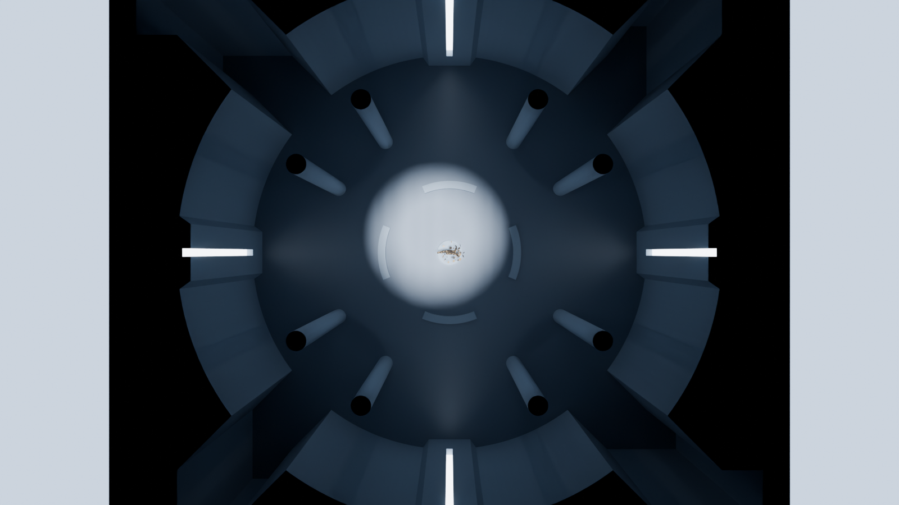

Rotonde — plan coté et aperçu (d'après ton SVG)
Relevé sur « planCercleColonne.svg » (1 m = 10 px), 30/10/2026. Cotes en mètres. Aperçu rendu directement dans Blender, sans précalcul de lumière : la géométrie est juste, la lumière est indicative.
Ce que j'ai lu
- Même carré de 40 × 40 m, mêmes portes dans les angles (en moulinet) et mêmes couloirs de 14 × 4 m : le passage d'une salle à l'autre ne change pas.
- À l'intérieur, une rotonde de 40 m de diamètre, tangente aux quatre murs ; entre le cercle et le carré, de la pierre pleine.
- Vers chaque porte, deux pans coupés à 45° ouvrent la rotonde (passage de 5,66 m) sur un carré de 4 × 4 m dans l'angle.
- Au milieu de chaque mur, un pilastre : 1 m de saillie, 4,2 m de large côté salle, côtés évasés vers le mur.
- Dans l'axe de chaque pilastre, une fente de 0,6 m de large (au lieu des quatre fentes de 28 m le long des murs).
- 12 colonnes rondes de 1,5 m de diamètre, du sol au plafond, sur un cercle de 13 m, une tous les 30° (dont une dans chaque axe).
- Oculus rond de 11 m au-dessus de l'œuvre, centré, avec les 6 lames nord-sud (même rythme, mis à 11 m).
- Essais sur « La maladie de Huntington », sur son socle à gorge lumineuse, avec les couleurs bleutées de sa salle.
- Quatre bancs en arc de 45°, de 6,5 à 7,2 m du centre, centrés sur les axes (au lieu de 10 à 11 m).
Décisions de Ludovic (30/10)
- 8 colonnes : celles des axes nord, sud, est et ouest sont retirées (31/10), pour laisser entrer la lumière des fentes.
- Vue d'arrivée à 11 m, devant les colonnes. Cercle (4,5 m) et cercle réduit (3 m) de Huntington inchangés : ils restent à l'intérieur des bancs.
- Oculus centré, comme sur le plan. Pour que le faisceau tombe sur l'œuvre, cette salle a son propre soleil, presque vertical (4° vers le nord, 3° vers l'ouest, au lieu de 10° et 8°).
- Fentes en L (31/10) : dans chaque pilastre, une fente de 0,6 m part de 3 m du sol, monte jusqu'au plafond (0,6 m de profondeur dans le pilastre), puis longe le plafond vers le centre sur 5 m (chambre de 3 m au-dessus). Au fond, une paroi lumineuse : la fente se lit comme un trait de lumière et éclaire doucement la salle.
- Coupole à l'intérieur du cercle des colonnes, sans reposer sur elles : elle part du plafond plat (17,5 m) à 10 m du centre, entre les colonnes et les bancs, et monte jusqu'au bord de l'oculus, à 24,5 m ; conduit de 3 m au-dessus, avec les lames. Un anneau de plafond plat de 3 m reste au-dessus des colonnes.
À trancher
- Hauteur de la coupole (7 m au-dessus du plafond plat) : avec un pied à 10 m, c'est presque une demi-sphère.
- Le raccord entre coupole et plafond plat fait une arête : on peut l'adoucir ou la souligner (corniche).
Aperçu






Plan
Nord en haut. Ouvertures du plafond en pointillés. Anneaux verts : trajets de la caméra pour Huntington.
pierre pleine, colonnesouverture au plafondfente des couloirsporte / seuiltrajets de la camérapied de la coupole
Coupe A–A
Est-ouest par le centre, vue vers le nord : coupole, pilastres et colonnes est et ouest coupés, colonnes au-delà en pointillés. En jaune : le faisceau de l'oculus et les fentes en L, avec leur paroi lumineuse.